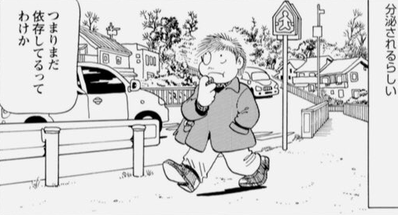

この記事によると宮﨑駿監督は「世界で起きていることは、半径3mの中で起きている」とよく口にしていたそうだ。
私は、個人にとっての現実は、自分の体から半径 3m 以内で、それより外側は全部情報で作られた虚構、と普段から認識するように努力し、口にもしている。
どうやら自分が言ってることと似たようなことを、宮崎駿さんも言ってたようだ。おそらく宮崎さんの言ってることとは、かなり質やベクトルが違うのだろうけど。
自分から 3m 離れると、そこはもう自分とは無関係な世界、という考えが、自分にとっては自分自身の外部刺激からのデトックスという考え方につながっていく。
この認識が極論であることは、自分でも当然わかってはいる。もちろん他人がこんな認識を持つ必要なんて一切無いとも確信している。
でもこのような認識により、世界との距離を保たないと、うつ病が悪化して、命の危険があるという、実用上の理由が自分にはある。うつ病で死なないために、そう認識するように意識して努力している。
別に誰かに調べろと言われたわけではないけれど、糖質依存症について調べる流れで、そのまま依存症について調べる流れとなった。なお本稿は医学情報を提供する目的は一切なく、素人による精神医学ポエムだと理解していただきたい。
依存症の世間的な代表といえばアルコール依存症だ。アルコール依存症でよく聞くのが脳の非可逆的器質的変化だ。つまりアルコール依存症では脳体積が縮小する。最も多く報告されている萎縮部位が前頭前野と海馬である。
前頭前野と海馬の体積縮小……なんだか聞き覚えがあるフレーズである。……うつ病と同じ萎縮部位ではないか。
うつ病だけではなく、統合失調症の陰性症状、アルツハイマー病 (うつを合併することが多い) 等々名だたる精神疾患とも共通する。なるほど。アルコール依存症等、薬物依存症患者がうつを合併するはずだ。うつ病と同じ部位が縮小しているのだから。
このことから、やはり依存症は精神病の一つだと生理学的にも言える。
アルコール依存症患者の前頭前野と海馬が縮小するという話は、ネット上の精神科領域の医師が書いた記事にも数多く取り上げられている。アルコール依存症患者の脳の前頭前野と海馬が縮小するということは、脳の他の部位が縮小していても全く不思議ではない。
マンガ・エッセイ作品ではあるが、実際に故吾妻ひでお氏が失踪日記とアル中病棟で、アルコール依存症患者 (作家本人) による、幻覚、幻聴の発生、妄想の発生を描かれている。統合失調症の陽性症状と変わりない。
統合失調症では前頭葉と上側頭回が目立って体積を減少させていることが知られているけれども、このうち上側頭回が縮小することで幻聴や幻覚が発生すると言われている。
同じ症状がアルコール依存症でも起きるのなら、やはりアルコール依存症患者の脳でも、統合失調症の場合と同じように前頭葉と上側頭回が萎縮していると考えるほうが自然だ。
アルコール依存症や他の薬物依存症で、脳の前頭前野や上側頭回が体積を減らすのであれば、糖質依存症ではどうなのか。
糖質の過剰摂取により精神病リスクが増大することを示唆するという研究結果が、国立精神・神経医療研究センター、福島県立医科大学、東京理科大学、富山大学、湘南医療大学、東北大学、トロント大学、大阪大学、国立研究開発法人 国立精神・神経医療研究センターの統合失調症プロジェクト、基盤技術センター、学術支援室との共同研究で発表されている (日本語の報道資料)。
論文の中にミクログリアだとか炎症所見だとか見慣れた文字が見える。この論文内では触れらていないが、やはり炎症反応により脳神経細胞のアポトーシスが亢進されて、BDNF の減少とともに神経新生が阻害されてしまうのではないかと推察される。炎症反応の機序は異なるが、やはりうつ病や双極性障害、統合失調症、その他の精神疾患同様に、脳の体積減少は起きるのではないだろうか。
現時点で、この研究を除き糖質依存性がうつ病や統合失調症のような症状を起こしたり、脳に器質的な変化をもたらすという具体的な研究を見つけることはできなかった。
ここで再びもちづきさんが登場する。
彼女であるが、生命に関わるほどの依存症患者であるにも関わらず、依存症であること以外は、あまりに普通すぎないか？という疑問を感じざるを得ない。
先に述べたように、そもそも糖質依存症で、アルコール依存症ほどの脳へのダメージがあるのかどうかは、調べてはみたものの、どうも定かではない。うつを合併するという話も特に見当たらない。幻聴、幻覚、妄想があるという話も聞かない。
やはりフィクションはフィクションであって、もちづきさんは現実の糖質依存ではなく、架空の重症依存症なのだろうか。疑問はつづく。
以下余談となるが、吾妻ひでお氏のアル中病棟には、断酒後に甘いものを求めてしまうことから、まだ依存しているのだな、と作者自身が独りごちるコマがあるが、これは説明が必要かと思う。
依存症というのはアルコール、薬物、糖質、ギャンブル、仕事、その他対象を問わず、アドレナリンやその他の物質が分泌されて報酬系が刺激され、その報酬系の刺激をより強く浴び続けないと耐えられなくなる病態である。つまり報酬系の刺激に対して耐性ができてしまい、より強く報酬系を刺激する必要が生じてしまい、依存に至る。
つまりアルコールが糖質に変わっただけで、依存症からなにも回復したわけではないと、吾妻ひでお氏は理解しているわけだ。通常ではこの理解にたどり着けないので、入院中のミーティング等が効果をあげているのだろう。